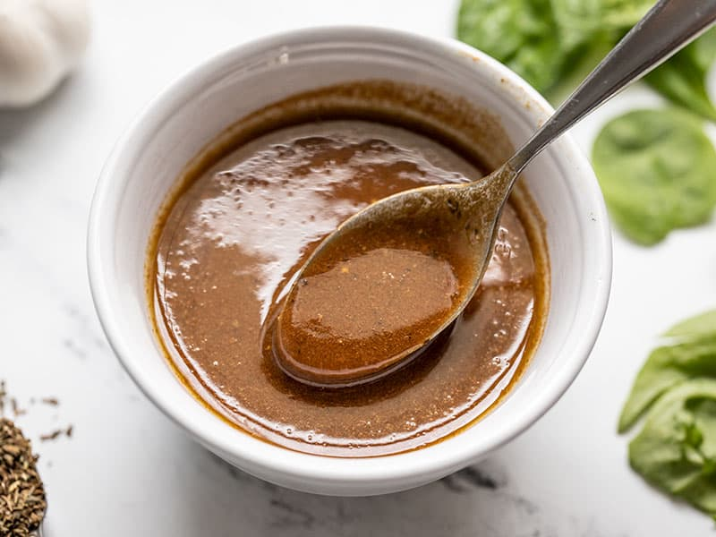

Mignonette Dressing

An Oyster Sauce with French roots
The recipe comes by way of my French sweetheart, who grew up on oysters in the South of France. This is his cherished mignonette recipe which he makes every time we have a gathering to enjoy oysters.
By the way, according to him, "mignonette" translates roughly into "cute, small, and tasty", and that's exactly what this is.
Ingredients
- 1/2 cup minced shallots (about 2 1/2 ounces)
- 1/4 cup white vinegar
- 1/4 cup unseasoned rice vinegar (if using seasoned rice vinegar, omit the sugar and salt)
- 1/8 teaspoon sugar
- 1/8 teaspoon kosher salt
- 1 1/4 teaspoon finely crushed white peppercorns (do not use pre-ground or powdered white pepper)
Steps